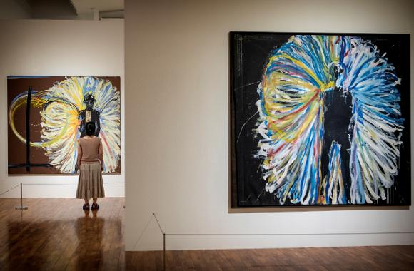
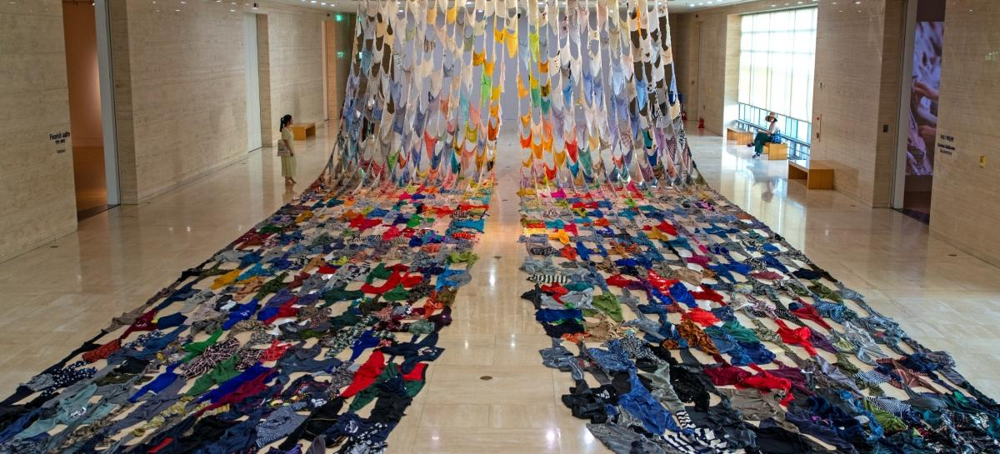
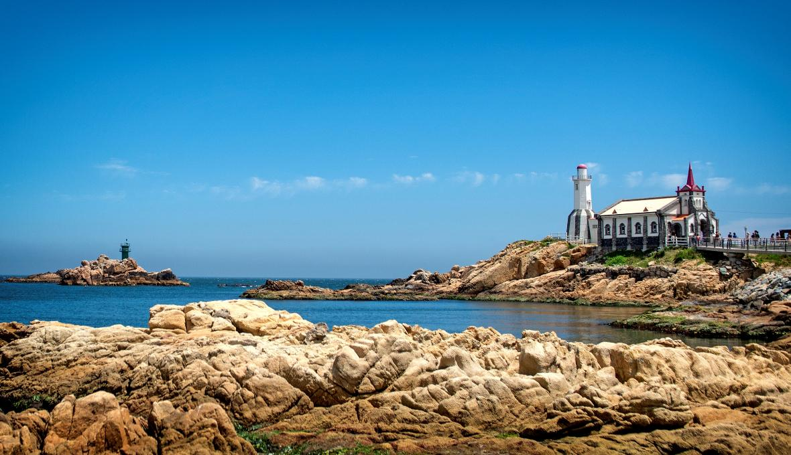

부산을 제대로 느껴보고 싶은 분들이 계시다면 저는 단연코 사직야구장을 방문해 보시는 걸 추천합니다. 야구의 도시 부산 답게 엄청난 함성 소리와 함께 신나는 응원가를 함께 부르다 보면 어느새 부산과 롯데자이언츠에 흠뻑 빠져버리실 지도 모르겠습니다! 어떻게 보면 사직야구장은 부산의 문화의 한 부분을 차지하는 의미 있는 장소라고 생각하고 방문하시면 정말 즐거운 추억 만드실 수 있을거예요!
윤**2023-09-16
5
favorite
부산시립미술관은 벡스코와 센텀시티 신세계 백화점 근처에 위치하고 있어서, 주변 문화시설들과 함께 둘러보기 너무 좋은 곳인데요, 미술관 자체도 부산시를 대표하는 미술관 답게 실·내외로 정말 다양한 전시가 진행되고 있습니다. 유명 작가들의 작품은 물론이고 특히 본관의 상설전시나 기획전시 외에도 별관에 이우환 작가의 작품을 전시한 이우환 공간이 있는데요, 이곳에 꼭 방문해보시길 바랍니다. 관람을 하면서 삶과 미술에 대한 많은 생각을 해볼 수 있었습니다. 정말 강추드리는 공간입니다!


L****2023-09-15
3
favorite
이런 데에 가는 것이 너무 좋습니다. 저도 옛날에는 한국에 처음 왔었을때 우리 학교에서 했던 비슷한 프로그램에 참여해가지고 한국과 특히 부산의 유명한 음식들 다 만들기 배웠습니다. 부산의 유명한 음식들, 부산의 맛 잘 아시죠? 부른다면요.
최**2023-09-11
6
favorite
동해바다의 에메랄드빛을 고스란히 담고 있는 기장 앞바다는 이제 많은 이들이 찾는 곳이 됐다. 날이 좋으면 좋은 대로, 날이 흐리면 흐린 대로 드라이브하기 더없이 좋은 코스에 경치 좋은 낭만카페를 찾아 기장으로 오는 사람들. 이들이 빼놓지 않고 찾는 곳, 기장의 죽성성당이다.

chevron_left1/100chevron_right
총(전체) 3,137건
윤**2023-09-16 00:11
5
favorite
열정과 에너지가 가득한 ‘작은부산’ 사직야구장
부산하면 야구, 야구하면 부산을 떠올릴 정도로 부산의 야구사랑은 유별나다. 세계 어느 스포츠팬보다도 유별난 부산 사람들의 야구 사랑으로 최고의 인기구단으로 통하는 롯데 자이언츠의 홈구장인 사직야구장은 특색 있는 응원문화가 여럿 있다.
영화 도둑들의 촬영지로 유명한 데파트는 원도심의 역사와 함께한 건물입니다. 근처에 롯데백화점을 비롯하여 많은 새로운 건물들이 들어섰지만, 데파트는 지금도 옛 모습을 잘 간직하고 있습니다. 비록 과거처럼 많은 사람들로 붐비지는 않지만 고즈넉함과 그 땐 그랬지라는 느낌을 받을 수 있는 곳이에요! 추억여행 그리고 느린 여행을 좋아하시는 분들께 정말 추천드리는 장소입니다.
서울에 한강이 있다면, 부산에는 낙동강이 있죠! 한강이 도시 느낌이 물씬 풍기는 강이라면 낙동강은 자연의 느낌을 그대로 보여주는 강이라고 할 수 있을 것 같아요. 특히 여기 글에 나온 비아조라는 카페에 가시면 강을 따라 테이블이 있는데 잔잔한 강이 흐르는 걸 보면서 마시는 커피와 음료는 이루 말할 수 없이 완벽합니다. 저는 여기서 정말 힐링하고 왔어요. 일상에 지친 분들에게 정말 강추드리는 장소입니다.